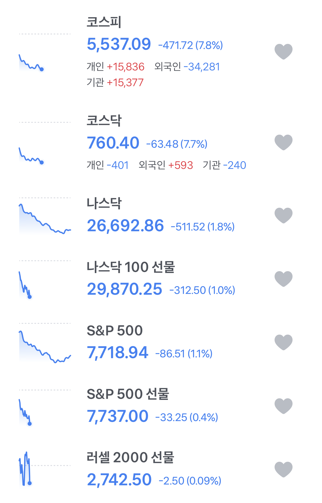
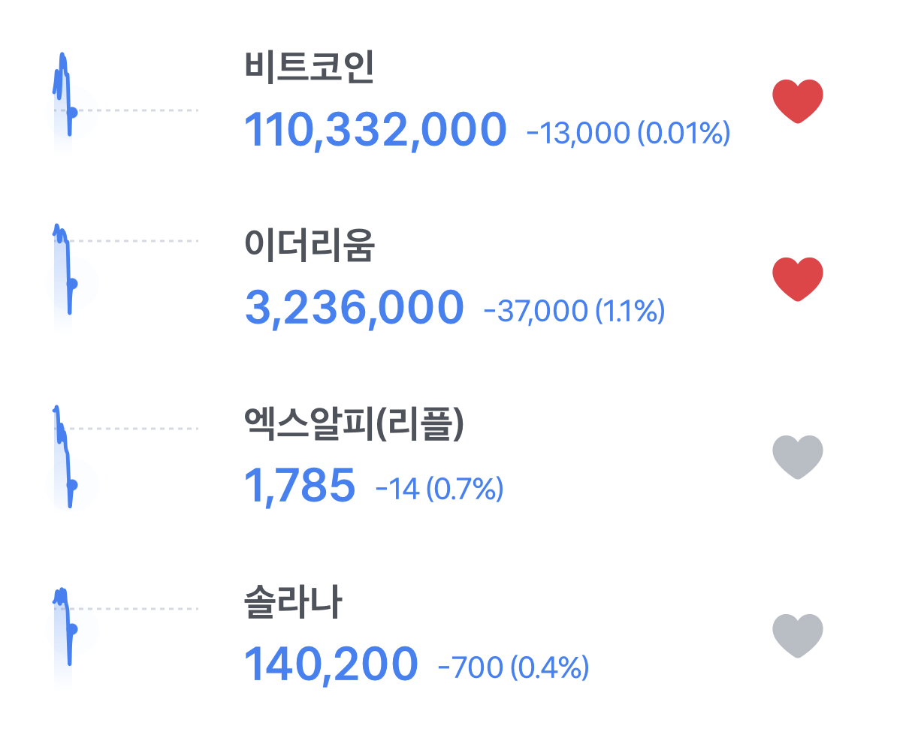

코스피 -7.8퍼
비트코인 -0.01퍼
다시는 안전자산을 무시하지 마라


코스피 -7.8퍼
비트코인 -0.01퍼
다시는 안전자산을 무시하지 마라
시작하자마자 사이드카 걸렸던 코스피스닥에 비해서는 그래도 오전엔 +였다는점
앗 코인은 1년 내내 쳐맞아서
더 맞을곳이 없..
이생퀴 빗코랑 이더에만 하트되있는거봐 ㅅㅂㅋㅋㅋ
솔직히 너무한다 코인,이더 급 코스피의 대장주 삼전,하닉과 비교해보면 ㅅㅂ 제1원칙 국장하지마라
코인이고 주식이고 실적이고 크게 오르면 크게 떨어진다.실적이 있던 실체가 없던 전혀 의미가 없는 일이라는 사실을 깨닫게 되었지.
주식시장이랑 실물경제의 괴리가 점점 커진다
ㅋㅋㅋㅋㅋㅋ 상대방 떨어질때마다 주접떨면 못이기는 자산이 어딨음?
ㄹㅇㅋㅋㅋ
비트코인이 조스로보이냐? ㅋㅋㅋ
알트가 아마 작년부터 처박아서 -90%된것도 허다한데 안전자산? 비트 이더가 최고점에어 처박은 퍼센트가 얼만데 안전자산?ㅎ
누가보면 코스피코스닥에는 IPO후에 동전주 되고 좀비주식 된거 하나도 없는줄 알겠어~
코스피 코스닥 머리채 잡는거보니 코인이 안전자산 아니라는거에 동의했네?ㅋㅋ 밈코인 한번 나열해줘?
혹시 물림?
미쳤다고 국장함?
이번엔 다른가?인줄 알았으나 절대아님ㅋㅋ 국장을 절대 믿지 마라
작년 말부터 꼬라박기만 하다 요즘 좀 튀어오르던데 안전자산 어쩌고 하기엔..
차트 모양만 봐도 암호화폐 변동성이 다른거 보다 훨씬 큰거 같은데 ㅋㅋㅋㅋ
댓글만봐도 주식에 물린애들 누군지 다~ 알겠네ㅋㅋㅋㅋ
살려주세요 다신 기웃거리지않겟슴니다!!
제1원칙을 망각한 죄 달게 받아랔ㅋㅋㅋ
몇년 걸릴려나
코인 수직하락이 더 눈에 띄는데 안전자산?